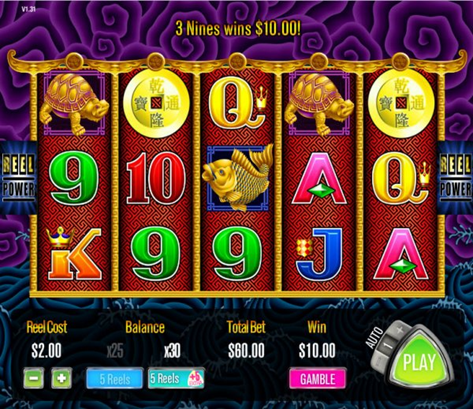
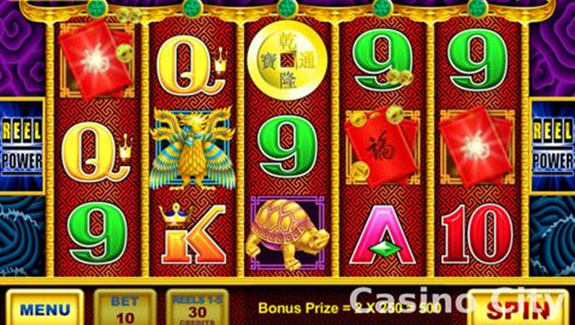
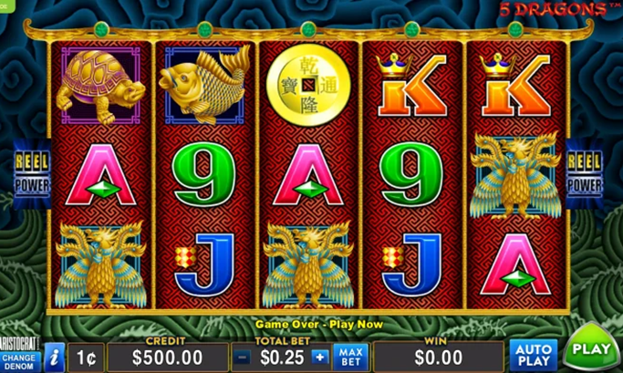
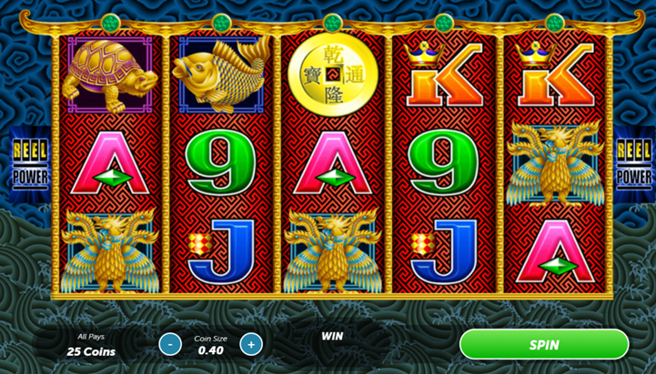
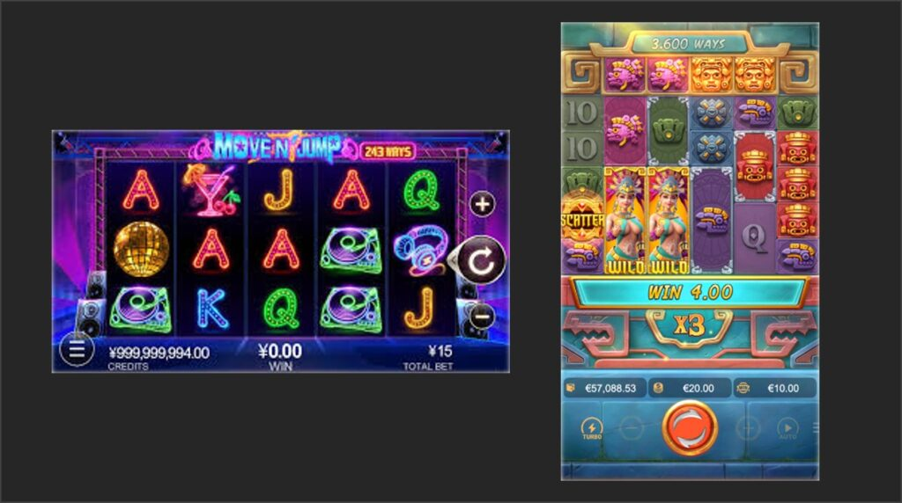
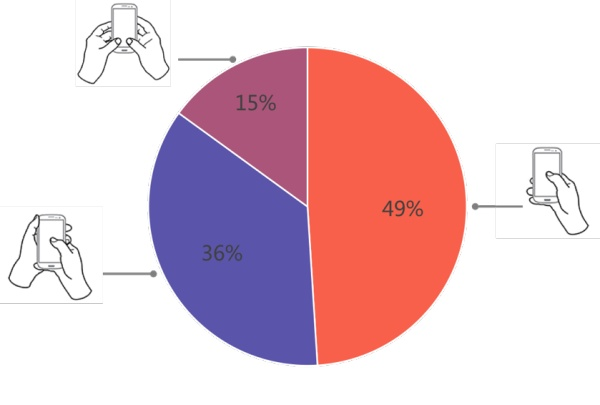
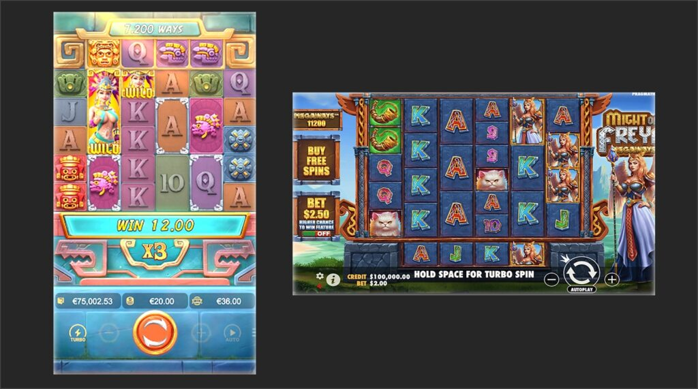

最近因為一些原因，在收集研究機台的 Web Slot，
發現許多非原廠版本的高仿作，令人驚訝的是，
高仿的操作介面，竟然比原廠還要好。
出於好奇，我整理了這些作品 Slot UI 的演變史，
從中竟能窺見 UI/UX 的演進縮影。
橫式 UI 的十年演變：從擬真到隱形
以最經典的《Five Dragons》為例，它的介面演變完美詮釋了四個設計階段：
導入期 - 擬真機台 UI 過渡時代

約 2010 年前後，廠商為了讓實體機台玩家無痛轉移，
Web 版 UI 造是依照實體按鈕設計，機台很多設定功能也照搬。
Web 不是機台，很多設定功能在 Web版不需要，
依照實體按鈕設計的UI，以現代眼光看眼睛實在很痛。
但以當是來說，這版的UI 算乾淨的!
成長期-以視覺轟炸換取直覺操作

Flash 與 Facebook 小遊戲鼎盛時期，UI 簡單粗暴怕你看不見。
沒有操作引導問題，但過度搶眼的 UI 反而喧賓奪主，搶走了滾輪的風采的問題。
將複雜的押注設定也藏在二級選單，有好有壞。
轉型期-極簡 UI

隨著 iPhone 普及，UI/UX 成為顯學，把加減注、自動旋轉等功能都有簡化。
按鈕設計又回頭靠攏機台。以現代眼光開看已經很舒服了。
成熟期：隱形 UI設計原則

也就是現代主流。UI可能低調懸浮或是跟主題融合，讓 UI 退居幕後。
只讓 Spin 的搶眼，而 Bet ,Auto 設定好找不顯眼， 成了黃金法則。
UI 只為了真正的主角服務: 遊戲的滾輪與圖標。
直式革命：單手操作與拇指熱區的勝利

直式介面的崛起，少走了許多冤枉路。例如「+/- 護法」佈局的確立 現代 Slot 常將加減注按鈕放在中央 Spin 鍵的兩側。這其實就是橫式 UI 的垂直翻轉，讓大拇指只需移動 1 公分就能完成「加注 -> 旋轉」。這 1 公分的優化，就是為了把操作成本降至最低。
直式UI流行我這邊猜測有兩個原因：
1.UI 數據在 Web業界瘋傳

業界不知道為什麼，這類UI使用數計在業界瘋傳。數據就在那，所也各家也跟進的改為直式。
2.Megaways 大盤面玩法的流行

Megaways 長型盤面，或大盤面消除遊戲流行，而且在直式螢幕上能獲得最佳呈現。
微互動： Slot 設計的細節
現代 Slot 的勝負，往往決戰於「微互動」的細膩度。現在的設計，每一個環節都在給予大腦反饋：
- 操作前的引導
早期的 Spin 鍵是單調的圖片；現在則會在閒置時加入微弱的呼吸光效，隱晦地挑逗玩家：「按我，試試看。」 - 操作當下的回饋
按下去的瞬間，還要配合噴光回饋。增加押注操作的信心。 - 視覺層級重塑
連線得分瞬間，背景會自動壓暗，得分圖標高亮顯示。
就像卡拉OK的提詞機，光速版的，光速讓玩家感覺到獲得了什麼！ - 扎實的獲得感
得分不只有數字，數字周圍金幣跳出的粒子動畫、光效。
向大腦傳遞訊號：「你拿到好東西的了。」
回顧這十幾年，Slot UI 適者擴散。
隨著 AI 工具能自動生成 UI，設計師受到的衝擊將越來越明顯。
但或許，UX 的價值不會輕易被取代。
標準的聲光回饋可以被複製，但玩家的感官是會疲乏的。
在這波 AI 浪潮中，真正能存活下來的，或許不是畫面畫得最快的人，
而是那些懂得在標準化產出中注入「節奏」，
精準判斷玩家下一秒會不會感到無聊的企劃與設計者。